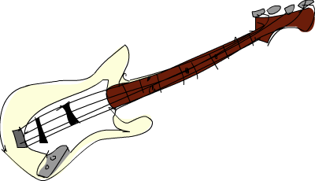

Functors, Applicative Functors and Monoids¶
Haskell's combination of purity, higher order functions, parameterized
algebraic data types, and typeclasses allows us to implement
polymorphism on a much higher level than possible in other languages. We
don't have to think about types belonging to a big hierarchy of types.
Instead, we think about what the types can act like and then connect
them with the appropriate typeclasses. An Int can act like a lot of
things. It can act like an equatable thing, like an ordered thing, like
an enumerable thing, etc.
Typeclasses are open, which means that we can define our own data type, think about what it can act like and connect it with the typeclasses that define its behaviors. Because of that and because of Haskell's great type system that allows us to know a lot about a function just by knowing its type declaration, we can define typeclasses that define behavior that's very general and abstract. We've met typeclasses that define operations for seeing if two things are equal or comparing two things by some ordering. Those are very abstract and elegant behaviors, but we just don't think of them as anything very special because we've been dealing with them for most of our lives. We recently met functors, which are basically things that can be mapped over. That's an example of a useful and yet still pretty abstract property that typeclasses can describe. In this chapter, we'll take a closer look at functors, along with slightly stronger and more useful versions of functors called applicative functors. We'll also take a look at monoids, which are sort of like socks.
Jupyter Note: We'll turn off the automatic linting for IHaskell first.
:opt no-lint
Jupyter Note: About the following functions.
withStdintakes a string and runs anIOaction with that string as the standard input. This is for simulating an interactive command line environment for programs. Inspired by Test.Main.withStdin. The original book instructs the reader to run interactive programs from a shell command line, but those instructions don't work in a Jupyter notebook environment because we want to be able to run the notebook from beginning to end without waiting for user interaction. The programs in this chapter can still be run interactively in the notebook, but if a program doesn't terminate, you will have to ⭮ Restart the kernel.
catchPrintcatches an exception and prints it to standard output. We use this because Jupyter won't show us the output of a program if the program throws an exception. We want to see both the output and the exception.
import System.IO
import GHC.IO.Handle
import Control.Exception
import System.Directory
withStdin :: String -> IO a -> IO a
withStdin s action = do
writeFile "stdin.txt" s
finally
(bracket
(openFile "stdin.txt" ReadWriteMode)
hClose
(\h -> do
stdin' <- hDuplicate stdin
hDuplicateTo h stdin
finally action (hDuplicateTo stdin' stdin)
)
)
(removeFile "stdin.txt")
catchPrint = flip catch p where
p :: SomeException -> IO ()
p = print
Functors redux¶

We've already talked about functors in their own little section. If you haven't read it yet, you should probably give it a glance right now, or maybe later when you have more time. Or you can just pretend you read it.
Still, here's a quick refresher: Functors are things that can be mapped
over, like lists, Maybes, trees, and such. In Haskell, they're described
by the typeclass Functor, which has only one typeclass method, namely
fmap, which has a type of fmap :: (a -> b) -> f a -> f b. It says:
give me a function that takes an a and returns a b and a box with an a
(or several of them) inside it and I'll give you a box with a b (or
several of them) inside it. It kind of applies the function to the
element inside the box.
A word of advice. Many times the box analogy is used to help you get some intuition for how functors work, and later, we'll probably use the same analogy for applicative functors and monads. It's an okay analogy that helps people understand functors at first, just don't take it too literally, because for some functors the box analogy has to be stretched really thin to still hold some truth. A more correct term for what a functor is would be computational context. The context might be that the computation can have a value or it might have failed (
MaybeandEither a) or that there might be more values (lists), stuff like that.
If we want to make a type constructor an instance of Functor, it has to
have a kind of * -> *, which means that it has to take exactly one
concrete type as a type parameter. For example, Maybe can be made an
instance because it takes one type parameter to produce a concrete type,
like Maybe Int or Maybe String. If a type constructor takes two
parameters, like Either, we have to partially apply the type constructor
until it only takes one type parameter. So we can't write
instance Functor Either where, but we can write
instance Functor (Either a) where
and then if we imagine that fmap is only for Either a, it would have a
type declaration of fmap :: (b -> c) -> Either a b -> Either a c. As
you can see, the Either a part is fixed, because Either a takes only one
type parameter, whereas just Either takes two so
fmap :: (b -> c) -> Either b -> Either c wouldn't really make sense.
We've learned by now how a lot of types (well, type constructors really)
are instances of Functor, like [], Maybe, Either a and a Tree type that
we made on our own. We saw how we can map functions over them for great
good. In this section, we'll take a look at two more instances of
functor, namely IO and (->) r.
If some value has a type of, say, IO String, that means that it's an I/O
action that, when performed, will go out into the real world and get
some string for us, which it will yield as a result. We can use <- in
do syntax to bind that result to a name. We mentioned that I/O actions
are like boxes with little feet that go out and fetch some value from
the outside world for us. We can inspect what they fetched, but after
inspecting, we have to wrap the value back in IO. By thinking about this
box with little feet analogy, we can see how IO acts like a functor.
Let's see how IO is an instance of Functor. When we fmap a function over
an I/O action, we want to get back an I/O action that does the same
thing, but has our function applied over its result value.
The result of mapping something over an I/O action will be an I/O
action, so right off the bat we use do syntax to glue two actions and
make a new one. In the implementation for fmap, we make a new I/O action
that first performs the original I/O action and calls its result result.
Then, we do return (f result). return is, as you know, a function that
makes an I/O action that doesn't do anything but only presents something
as its result. The action that a do block produces will always have
the result value of its last action. That's why we use return to make an
I/O action that doesn't really do anything, it just presents f result as
the result of the new I/O action.
We can play around with it to gain some intuition. It's pretty simple really. Check out this piece of code:
main = do line <- getLine
let line' = reverse line
putStrLn $ "You said " ++ line' ++ " backwards!"
putStrLn $ "Yes, you really said" ++ line' ++ " backwards!"
The user is prompted for a line and we give it back to the user, only
reversed. Here's how to rewrite this by using fmap:
main = do line <- fmap reverse getLine
putStrLn $ "You said " ++ line ++ " backwards!"
putStrLn $ "Yes, you really said " ++ line ++ " backwards!"
withStdin "blah" main

Just like when we fmap reverse over Just "blah" to get Just "halb", we
can fmap reverse over getLine. getLine is an I/O action that has a type
of IO String and mapping reverse over it gives us an I/O action that
will go out into the real world and get a line and then apply reverse to
its result. Like we can apply a function to something that's inside a
Maybe box, we can apply a function to what's inside an IO box, only it
has to go out into the real world to get something. Then when we bind it
to a name by using <-, the name will reflect the result that already
has reverse applied to it.
The I/O action fmap (++"!") getLine behaves just like getLine, only that
its result always has "!" appended to it!
If we look at what fmap's type would be if it were limited to IO, it
would be fmap :: (a -> b) -> IO a -> IO b. fmap takes a function and
an I/O action and returns a new I/O action that's like the old one,
except that the function is applied to its contained result.
If you ever find yourself binding the result of an I/O action to a name,
only to apply a function to that and call that something else, consider
using fmap, because it looks prettier. If you want to apply multiple
transformations to some data inside a functor, you can declare your own
function at the top level, make a lambda function or ideally, use
function composition:
import Data.Char
import Data.List
main = do line <- fmap (intersperse '-' . reverse . map toUpper) getLine
putStrLn line
withStdin "hello there" main
As you probably know, intersperse '-' . reverse . map toUpper is a
function that takes a string, maps toUpper over it, then applies reverse
to that result and then applies intersperse '-' to that result. It's
like writing (\xs -> intersperse '-' (reverse (map toUpper xs))), only
prettier.
Another instance of Functor that we've been dealing with all along but
didn't know was a Functor is (->) r. You're probably slightly confused
now, since what the heck does (->) r mean? The function type r -> a
can be rewritten as (->) r a, much like we can write 2 + 3 as (+) 2 3.
When we look at it as (->) r a, we can see (->) in a slightly different
light, because we see that it's just a type constructor that takes two
type parameters, just like Either. But remember, we said that a type
constructor has to take exactly one type parameter so that it can be
made an instance of Functor. That's why we can't make (->) an instance
of Functor, but if we partially apply it to (->) r, it doesn't pose any
problems. If the syntax allowed for type constructors to be partially
applied with sections (like we can partially apply + by doing (2+),
which is the same as (+) 2), you could write (->) r as (r ->). How are
functions functors? Well, let's take a look at the implementation, which
lies in Control.Monad.Instances
We usually mark functions that take anything and return anything as
a -> b.r -> ais the same thing, we just used different letters for the type variables.
If the syntax allowed for it, it could have been written as
But it doesn't, so we have to write it in the former fashion.
First of all, let's think about fmap's type. It's
fmap :: (a -> b) -> f a -> f b. Now what we'll do is mentally replace all the f's, which
are the role that our functor instance plays, with (->) r's. We'll do
that to see how fmap should behave for this particular instance. We get
fmap :: (a -> b) -> ((->) r a) -> ((->) r b). Now what we can do is
write the (->) r a and (-> r b) types as infix r -> a and r -> b,
like we normally do with functions. What we get now is
fmap :: (a -> b) -> (r -> a) -> (r -> b).
Hmmm OK. Mapping one function over a function has to produce a function,
just like mapping a function over a Maybe has to produce a Maybe and
mapping a function over a list has to produce a list. What does the type
fmap :: (a -> b) -> (r -> a) -> (r -> b) for this instance tell us?
Well, we see that it takes a function from a to b and a function from r
to a and returns a function from r to b. Does this remind you of
anything? Yes! Function composition! We pipe the output of r -> a into
the input of a -> b to get a function r -> b, which is exactly what
function composition is about. If you look at how the instance is
defined above, you'll see that it's just function composition. Another
way to write this instance would be:
This makes the revelation that using fmap over functions is just
composition sort of obvious. Do :m + Control.Monad.Instances, since
that's where the instance is defined and then try playing with mapping
over functions.
:t fmap (*3) (+100)
fmap (*3) (+100) 1
(*3) `fmap` (+100) $ 1
(*3) . (+100) $ 1
fmap (show . (*3)) (*100) 1
We can call fmap as an infix function so that the resemblance to . is
clear. In the second input line, we're mapping (*3) over (+100), which
results in a function that will take an input, call (+100) on that and
then call (*3) on that result. We call that function with 1.
How does the box analogy hold here? Well, if you stretch it, it holds.
When we use fmap (+3) over Just 3, it's easy to imagine the Maybe as a
box that has some contents on which we apply the function (+3). But what
about when we're doing fmap (*3) (+100)? Well, you can think of the
function (+100) as a box that contains its eventual result. Sort of like
how an I/O action can be thought of as a box that will go out into the
real world and fetch some result. Using fmap (*3) on (+100) will create
another function that acts like (+100), only before producing a result,
(*3) will be applied to that result. Now we can see how fmap acts just
like . for functions.
The fact that fmap is function composition when used on functions isn't
so terribly useful right now, but at least it's very interesting. It
also bends our minds a bit and let us see how things that act more like
computations than boxes (IO and (->) r) can be functors. The function
being mapped over a computation results in the same computation but the
result of that computation is modified with the function.

Before we go on to the rules that fmap should follow, let's think about
the type of fmap once more. Its type is fmap :: (a -> b) -> f a -> f b.
We're missing the class constraint (Functor f) =>, but we left it
out here for brevity, because we're talking about functors anyway so we
know what the f stands for. When we first learned about curried
functions, we said that all
Haskell functions actually take one parameter. A function a -> b -> c
actually takes just one parameter of type a and then returns a function
b -> c, which takes one parameter and returns a c. That's how if we
call a function with too few parameters (i.e. partially apply it), we
get back a function that takes the number of parameters that we left out
(if we're thinking about functions as taking several parameters again).
So a -> b -> c can be written as a -> (b -> c), to make the currying
more apparent.
In the same vein, if we write fmap :: (a -> b) -> (f a -> f b), we
can think of fmap not as a function that takes one function and a
functor and returns a functor, but as a function that takes a function
and returns a new function that's just like the old one, only it takes a
functor as a parameter and returns a functor as the result. It takes an
a -> b function and returns a function f a -> f b. This is called
lifting a function. Let's play around with that idea by using GHCI's
:t command:
:t fmap (*2)
:t fmap (replicate 3)
The expression fmap (*2) is a function that takes a functor f over
numbers and returns a functor over numbers. That functor can be a list,
a Maybe, an Either String, whatever. The expression fmap (replicate 3)
will take a functor over any type and return a functor over a list of
elements of that type.
When we say a functor over numbers, you can think of that as a functor that has numbers in it. The former is a bit fancier and more technically correct, but the latter is usually easier to get.
This is even more apparent if we partially apply, say, fmap (++"!") and
then bind it to a name in GHCI.
You can think of fmap as either a function that takes a function and a
functor and then maps that function over the functor, or you can think
of it as a function that takes a function and lifts that function so
that it operates on functors. Both views are correct and in Haskell,
equivalent.
The type fmap (replicate 3) :: (Functor f) => f a -> f [a] means that
the function will work on any functor. What exactly it will do depends
on which functor we use it on. If we use fmap (replicate 3) on a list,
the list's implementation for fmap will be chosen, which is just map. If
we use it on a Maybe a, it'll apply replicate 3 to the value inside the
Just, or if it's Nothing, then it stays Nothing.
fmap (replicate 3) [1,2,3,4]
fmap (replicate 3) (Just 4)
fmap (replicate 3) (Right "blah")
fmap (replicate 3) Nothing
fmap (replicate 3) (Left "foo")
Next up, we're going to look at the functor laws. In order for
something to be a functor, it should satisfy some laws. All functors are
expected to exhibit certain kinds of functor-like properties and
behaviors. They should reliably behave as things that can be mapped
over. Calling fmap on a functor should just map a function over the
functor, nothing more. This behavior is described in the functor laws.
There are two of them that all instances of Functor should abide by.
They aren't enforced by Haskell automatically, so you have to test them
out yourself.
The first functor law states that if we map the id function over a
functor, the functor that we get back should be the same as the original
functor. If we write that a bit more formally, it means that
fmap id = id.
So essentially, this says that if we do fmap id over a functor, it
should be the same as just calling id on the functor. Remember, id is
the identity function, which just returns its parameter unmodified. It
can also be written as \x -> x. If we view the functor as something
that can be mapped over, the fmap id = id law seems kind of trivial or
obvious.
Let's see if this law holds for a few values of functors.
fmap id (Just 3)
id (Just 3)
fmap id [1..5]
id [1..5]
fmap id []
fmap id Nothing
We imagine that id plays the role of the f parameter in the
implementation. We see that if we fmap id over Just x, the result will
be Just (id x), and because id just returns its parameter, we can deduce
that Just (id x) equals Just x. So now we know that if we map id over a
Maybe value with a Just value constructor, we get that same value back.
Seeing that mapping id over a Nothing value returns the same value is
trivial. So from these two equations in the implementation for fmap, we
see that the law fmap id = id holds.

The second law says that composing two functions and then mapping the
resulting function over a functor should be the same as first mapping
one function over the functor and then mapping the other one. Formally
written, that means that fmap (f . g) = fmap f . fmap g. Or to write it
in another way, for any functor F, the following should
hold: fmap (f . g) F = fmap f (fmap g F).
If we can show that some type obeys both functor laws, we can rely on it
having the same fundamental behaviors as other functors when it comes to
mapping. We can know that when we use fmap on it, there won't be
anything other than mapping going on behind the scenes and that it will
act like a thing that can be mapped over, i.e. a functor. You figure out
how the second law holds for some type by looking at the implementation
of fmap for that type and then using the method that we used to check if
Maybe obeys the first law.
If you want, we can check out how the second functor law holds for
Maybe. If we do fmap (f . g) over Nothing, we get Nothing, because doing
a fmap with any function over Nothing returns Nothing. If we do
fmap f (fmap g Nothing), we get Nothing, for the same reason. OK, seeing how
the second law holds for Maybe if it's a Nothing value is pretty easy,
almost trivial.
How about if it's a Just <something> value? Well, if we do
fmap (f . g) (Just x),
we see from the implementation that it's implemented as
Just ((f . g) x), which is, of course, Just (f (g x)).
If we do fmap f (fmap g (Just x)),
we see from the implementation that fmap g (Just x) is
Just (g x). Ergo, fmap f (fmap g (Just x)) equals
fmap f (Just (g x)) and
from the implementation we see that this equals Just (f (g x)).
If you're a bit confused by this proof, don't worry. Be sure that you understand how function composition works. Many times, you can intuitively see how these laws hold because the types act like containers or functions. You can also just try them on a bunch of different values of a type and be able to say with some certainty that a type does indeed obey the laws.
Let's take a look at a pathological example of a type constructor being
an instance of the Functor typeclass but not really being a functor,
because it doesn't satisfy the laws. Let's say that we have a type:
data CMaybe a = CNothing | CJust Int a deriving (Show)
The C here stands for counter. It's a data type that looks much like
Maybe a, only the Just part holds two fields instead of one. The first
field in the CJust value constructor will always have a type of Int, and
it will be some sort of counter and the second field is of type a, which
comes from the type parameter and its type will, of course, depend on
the concrete type that we choose for CMaybe a. Let's play with our new
type to get some intuition for it.
CNothing
CJust 0 "haha"
:t CNothing
:t CJust 0 "haha"
CJust 100 [1,2,3]
If we use the CNothing constructor, there are no fields, and if we use
the CJust constructor, the first field is an integer and the second
field can be any type. Let's make this an instance of Functor so that
every time we use fmap, the function gets applied to the second field,
whereas the first field gets increased by 1.
instance Functor CMaybe where
fmap f CNothing = CNothing
fmap f (CJust counter x) = CJust (counter+1) (f x)
This is kind of like the instance implementation for Maybe, except that
when we do fmap over a value that doesn't represent an empty box (a
CJust value), we don't just apply the function to the contents, we also
increase the counter by 1. Everything seems cool so far, we can even
play with this a bit:
fmap (++"ha") (CJust 0 "ho")
fmap (++"he") (fmap (++"ha") (CJust 0 "ho"))
fmap (++"blah") CNothing
Does this obey the functor laws? In order to see that something doesn't obey a law, it's enough to find just one counter-example.
fmap id (CJust 0 "haha")
id (CJust 0 "haha")
Ah! We know that the first functor law states that if we map id over a
functor, it should be the same as just calling id with the same functor,
but as we've seen from this example, this is not true for our CMaybe
functor. Even though it's part of the Functor typeclass, it doesn't obey
the functor laws and is therefore not a functor. If someone used our
CMaybe type as a functor, they would expect it to obey the functor laws
like a good functor. But CMaybe fails at being a functor even though it
pretends to be one, so using it as a functor might lead to some faulty
code. When we use a functor, it shouldn't matter if we first compose a
few functions and then map them over the functor or if we just map each
function over a functor in succession. But with CMaybe, it matters,
because it keeps track of how many times it's been mapped over. Not
cool! If we wanted CMaybe to obey the functor laws, we'd have to make it
so that the Int field stays the same when we use fmap.
At first, the functor laws might seem a bit confusing and unnecessary,
but then we see that if we know that a type obeys both laws, we can make
certain assumptions about how it will act. If a type obeys the functor
laws, we know that calling fmap on a value of that type will only map
the function over it, nothing more. This leads to code that is more
abstract and extensible, because we can use laws to reason about
behaviors that any functor should have and make functions that operate
reliably on any functor.
All the Functor instances in the standard library obey these laws, but
you can check for yourself if you don't believe me. And the next time
you make a type an instance of Functor, take a minute to make sure that
it obeys the functor laws. Once you've dealt with enough functors, you
kind of intuitively see the properties and behaviors that they have in
common and it's not hard to intuitively see if a type obeys the functor
laws. But even without the intuition, you can always just go over the
implementation line by line and see if the laws hold or try to find a
counter-example.
We can also look at functors as things that output values in a context.
For instance, Just 3 outputs the value 3 in the context that it might or
not output any values at all. [1,2,3] outputs three values—1, 2, and 3,
the context is that there may be multiple values or no values. The
function (+3) will output a value, depending on which parameter it is
given.
If you think of functors as things that output values, you can think of
mapping over functors as attaching a transformation to the output of the
functor that changes the value. When we do fmap (+3) [1,2,3], we attach
the transformation (+3) to the output of [1,2,3], so whenever we look at
a number that the list outputs, (+3) will be applied to it. Another
example is mapping over functions. When we do fmap (+3) (*3), we attach
the transformation (+3) to the eventual output of (*3). Looking at it
this way gives us some intuition as to why using fmap on functions is
just composition (fmap (+3) (*3) equals (+3) . (*3), which equals
\x -> ((x*3)+3)), because we take a function like (*3) then we attach
the transformation (+3) to its output. The result is still a function,
only when we give it a number, it will be multiplied by three and then
it will go through the attached transformation where it will be added to
three. This is what happens with composition.
Applicative functors¶

In this section, we'll take a look at applicative functors, which are
beefed up functors, represented in Haskell by the Applicative typeclass,
found in the Control.Applicative module.
As you know, functions in Haskell are curried by default, which means
that a function that seems to take several parameters actually takes
just one parameter and returns a function that takes the next parameter
and so on. If a function is of type a -> b -> c, we usually say that
it takes two parameters and returns a c, but actually it takes an a and
returns a function b -> c. That's why we can call a function as f x y
or as (f x) y. This mechanism is what enables us to partially apply
functions by just calling them with too few parameters, which results in
functions that we can then pass on to other functions.
So far, when we were mapping functions over functors, we usually mapped
functions that take only one parameter. But what happens when we map a
function like *, which takes two parameters, over a functor? Let's take
a look at a couple of concrete examples of this. If we have Just 3 and
we do fmap (*) (Just 3), what do we get? From the instance
implementation of Maybe for Functor, we know that if it's a
Just <something> value, it will apply the function to the <something> inside
the Just. Therefore, doing fmap (*) (Just 3) results in Just ((*) 3),
which can also be written as Just (* 3) if we use sections.
Interesting! We get a function wrapped in a Just!
:t fmap (++) (Just "hey")
:t fmap compare (Just 'a')
:t fmap compare "A LIST OF CHARS"
:t fmap (\x y z -> x + y / z) [3,4,5,6]
If we map compare, which has a type of (Ord a) => a -> a -> Ordering
over a list of characters, we get a list of functions of type
Char -> Ordering, because the function compare gets partially applied with the
characters in the list. It's not a list of (Ord a) => a -> Ordering
function, because the first a that got applied was a Char and so the
second a has to decide to be of type Char.
We see how by mapping "multi-parameter" functions over functors, we get functors that contain functions inside them. So now what can we do with them? Well for one, we can map functions that take these functions as parameters over them, because whatever is inside a functor will be given to the function that we're mapping over it as a parameter.
let a = fmap (*) [1,2,3,4]
:t a
fmap (\f -> f 9) a
But what if we have a functor value of Just (3 *) and a functor value
of Just 5 and we want to take out the function from Just (3 *) and map
it over Just 5? With normal functors, we're out of luck, because all
they support is just mapping normal functions over existing functors.
Even when we mapped \f -> f 9 over a functor that contained functions
inside it, we were just mapping a normal function over it. But we can't
map a function that's inside a functor over another functor with what
fmap offers us. We could pattern-match against the Just constructor to
get the function out of it and then map it over Just 5, but we're
looking for a more general and abstract way of doing that, which works
across functors.
Meet the Applicative typeclass. It lies in the Control.Applicative
module and it defines two methods, pure and <*>. It doesn't provide a
default implementation for any of them, so we have to define them both
if we want something to be an applicative functor. The class is defined
like so:
This simple three line class definition tells us a lot! Let's start at
the first line. It starts the definition of the Applicative class and it
also introduces a class constraint. It says that if we want to make a
type constructor part of the Applicative typeclass, it has to be in
Functor first. That's why if we know that if a type constructor is part
of the Applicative typeclass, it's also in Functor, so we can use fmap
on it.
The first method it defines is called pure. Its type declaration is
pure :: a -> f a. f plays the role of our applicative functor instance here.
Because Haskell has a very good type system and because everything a
function can do is take some parameters and return some value, we can
tell a lot from a type declaration and this is no exception. pure should
take a value of any type and return an applicative functor with that
value inside it. When we say inside it, we're using the box analogy
again, even though we've seen that it doesn't always stand up to
scrutiny. But the a -> f a type declaration is still pretty
descriptive. We take a value and we wrap it in an applicative functor
that has that value as the result inside it.
A better way of thinking about pure would be to say that it takes a
value and puts it in some sort of default (or pure) context—a minimal
context that still yields that value.
The <*> function is really interesting. It has a type declaration of
f (a -> b) -> f a -> f b. Does this remind you of anything? Of
course, fmap :: (a -> b) -> f a -> f b. It's a sort of a beefed up
fmap. Whereas fmap takes a function and a functor and applies the
function inside the functor, <*> takes a functor that has a function
in it and another functor and sort of extracts that function from the
first functor and then maps it over the second one. When I say
extract, I actually sort of mean run and then extract, maybe even
sequence. We'll see why soon.
Let's take a look at the Applicative instance implementation for Maybe.
Again, from the class definition we see that the f that plays the role
of the applicative functor should take one concrete type as a parameter,
so we write instance Applicative Maybe where instead of writing
instance Applicative (Maybe a) where.
First off, pure. We said earlier that it's supposed to take something
and wrap it in an applicative functor. We wrote pure = Just, because
value constructors like Just are normal functions. We could have also
written pure x = Just x.
Next up, we have the definition for <*>. We can't extract a function
out of a Nothing, because it has no function inside it. So we say that
if we try to extract a function from a Nothing, the result is a Nothing.
If you look at the class definition for Applicative, you'll see that
there's a Functor class constraint, which means that we can assume that
both of <*>'s parameters are functors. If the first parameter is not
a Nothing, but a Just with some function inside it, we say that we then
want to map that function over the second parameter. This also takes
care of the case where the second parameter is Nothing, because doing
fmap with any function over a Nothing will return a Nothing.
So for Maybe, <*> extracts the function from the left value if it's a
Just and maps it over the right value. If any of the parameters is
Nothing, Nothing is the result.
OK cool great. Let's give this a whirl.
Just (+3) <*> Just 9
pure (+3) <*> Just 10
pure (+3) <*> Just 9
Just (++"hahah") <*> Nothing
Nothing <*> Just "woot"
We see how doing pure (+3) and Just (+3) is the same in this case. Use
pure if you're dealing with Maybe values in an applicative context (i.e.
using them with <*>), otherwise stick to Just. The first four input
lines demonstrate how the function is extracted and then mapped, but in
this case, they could have been achieved by just mapping unwrapped
functions over functors. The last line is interesting, because we try to
extract a function from a Nothing and then map it over something, which
of course results in a Nothing.
With normal functors, you can just map a function over a functor and then you can't get the result out in any general way, even if the result is a partially applied function. Applicative functors, on the other hand, allow you to operate on several functors with a single function. Check out this piece of code:
pure (+) <*> Just 3 <*> Just 5
pure (+) <*> Just 3 <*> Nothing
pure (+) <*> Nothing <*> Just 5

What's going on here? Let's take a look, step by step. <*> is
left-associative, which means that pure (+) <*> Just 3 <*> Just 5
is the same as (pure (+) <*> Just 3) <*> Just 5. First, the +
function is put in a functor, which is in this case a Maybe value that
contains the function. So at first, we have pure (+), which is Just (+).
Next, Just (+) <*> Just 3 happens. The result of this is Just (3+).
This is because of partial application. Only applying 3 to the +
function results in a function that takes one parameter and adds 3 to
it. Finally, Just (3+) <*> Just 5 is carried out, which results in a
Just 8.
Isn't this awesome?! Applicative functors and the applicative style of
doing pure f <*> x <*> y <*> ... allow us to take a function
that expects parameters that aren't necessarily wrapped in functors and
use that function to operate on several values that are in functor
contexts. The function can take as many parameters as we want, because
it's always partially applied step by step between occurrences of <*>.
This becomes even more handy and apparent if we consider the fact that
pure f <*> x equals fmap f x. This is one of the applicative laws.
We'll take a closer look at them later, but for now, we can sort of
intuitively see that this is so. Think about it, it makes sense. Like we
said before, pure puts a value in a default context. If we just put a
function in a default context and then extract and apply it to a value
inside another applicative functor, we did the same as just mapping that
function over that applicative functor. Instead of writing
pure f <*> x <*> y <*> ...,
we can write fmap f x <*> y <*> .... This
is why Control.Applicative exports a function called <$>, which is
just fmap as an infix operator. Here's how it's defined:
Yo! Quick reminder: type variables are independent of parameter names or other value names. The
fin the function declaration here is a type variable with a class constraint saying that any type constructor that replacesfshould be in theFunctortypeclass. Thefin the function body denotes a function that we map overx. The fact that we usedfto represent both of those doesn't mean that they somehow represent the same thing.
By using <$>, the applicative style really shines, because now if we
want to apply a function f between three applicative functors, we can
write f <$> x <*> y <*> z. If the parameters weren't
applicative functors but normal values, we'd write f x y z.
Let's take a closer look at how this works. We have a value of
Just "johntra" and a value of Just "volta" and we want to join them into one
String inside a Maybe functor. We do this:
(++) <$> Just "johntra" <*> Just "volta"
Before we see how this happens, compare the above line with this:
(++) "johntra" "volta"
Awesome! To use a normal function on applicative functors, just sprinkle
some <$> and <*> about and the function will operate on
applicatives and return an applicative. How cool is that?
Anyway, when we do (++) <$> Just "johntra" <*> Just "volta", first
(++), which has a type of (++) :: [a] -> [a] -> [a] gets mapped over
Just "johntra", resulting in a value that's the same as
Just ("johntra"++) and has a type of Maybe ([Char] -\> [Char]). Notice how
the first parameter of (++) got eaten up and how the as turned into
Chars. And now Just ("johntra"++) <*> Just "volta" happens, which
takes the function out of the Just and maps it over Just "volta",
resulting in Just "johntravolta". Had any of the two values been
Nothing, the result would have also been Nothing.
So far, we've only used Maybe in our examples and you might be thinking
that applicative functors are all about Maybe. There are loads of other
instances of Applicative, so let's go and meet them!
Lists (actually the list type constructor, []) are applicative functors.
What a surprise! Here's how [] is an instance of Applicative:
Earlier, we said that pure takes a value and puts it in a default
context. Or in other words, a minimal context that still yields that
value. The minimal context for lists would be the empty list, [], but
the empty list represents the lack of a value, so it can't hold in
itself the value that we used pure on. That's why pure takes a value and
puts it in a singleton list. Similarly, the minimal context for the
Maybe applicative functor would be a Nothing, but it represents the lack
of a value instead of a value, so pure is implemented as Just in the
instance implementation for Maybe.
pure "Hey" :: [String]
pure "Hey" :: Maybe String
What about <*>? If we look at what <*>'s type would be if it were
limited only to lists, we get (<*>) :: [a -> b] -> [a] -> [b].
It's implemented with a list
comprehension. <*> has to
somehow extract the function out of its left parameter and then map it
over the right parameter. But the thing here is that the left list can
have zero functions, one function, or several functions inside it. The
right list can also hold several values. That's why we use a list
comprehension to draw from both lists. We apply every possible function
from the left list to every possible value from the right list. The
resulting list has every possible combination of applying a function
from the left list to a value in the right one.
[(*0),(+100),(^2)] <*> [1,2,3]
The left list has three functions and the right list has three values, so the resulting list will have nine elements. Every function in the left list is applied to every function in the right one. If we have a list of functions that take two parameters, we can apply those functions between two lists.
[(+),(*)] <*> [1,2] <*> [3,4]
Because <*> is left-associative, [(+),(*)] <*> [1,2] happens
first, resulting in a list that's the same as [(1+),(2+),(1*),(2*)],
because every function on the left gets applied to every value on the
right. Then, [(1+),(2+),(1*),(2*)] <*> [3,4] happens, which
produces the final result.
Using the applicative style with lists is fun! Watch:
(++) <$> ["ha","heh","hmm"] <*> ["?","!","."]
Again, see how we used a normal function that takes two strings between two applicative functors of strings just by inserting the appropriate applicative operators.
You can view lists as non-deterministic computations. A value like 100
or "what" can be viewed as a deterministic computation that has only one
result, whereas a list like [1,2,3] can be viewed as a computation that
can't decide on which result it wants to have, so it presents us with
all of the possible results. So when you do something like
(+) <$> [1,2,3] <*> [4,5,6], you can think of it as adding together two
non-deterministic computations with +, only to produce another
non-deterministic computation that's even less sure about its result.
Using the applicative style on lists is often a good replacement for
list comprehensions. In the second chapter, we wanted to see all the
possible products of [2,5,10] and [8,10,11], so we did this:
[ x*y | x <- [2,5,10], y <- [8,10,11]]
We're just drawing from two lists and applying a function between every combination of elements. This can be done in the applicative style as well:
(*) <$> [2,5,10] <*> [8,10,11]
This seems clearer to me, because it's easier to see that we're just
calling * between two non-deterministic computations. If we wanted all
possible products of those two lists that are more than 50, we'd just
do:
filter (>50) $ (*) <$> [2,5,10] <*> [8,10,11]
It's easy to see how pure f <*> xs equals fmap f xs with lists.
pure f is just [f] and [f] <*> xs will apply every function in the left
list to every value in the right one, but there's just one function in
the left list, so it's like mapping.
Another instance of Applicative that we've already encountered is IO.
This is how the instance is implemented:

Since pure is all about putting a value in a minimal context that still
holds it as its result, it makes sense that pure is just return, because
return does exactly that; it makes an I/O action that doesn't do
anything, it just yields some value as its result, but it doesn't really
do any I/O operations like printing to the terminal or reading from a
file.
If <*> were specialized for IO it would have a type of
(<*>) :: IO (a -> b) -> IO a -> IO b. It would take an I/O action that yields a
function as its result and another I/O action and create a new I/O
action from those two that, when performed, first performs the first one
to get the function and then performs the second one to get the value
and then it would yield that function applied to the value as its
result. We used do syntax to implement it here. Remember, do syntax
is about taking several I/O actions and gluing them into one, which is
exactly what we do here.
With Maybe and [], we could think of <*> as simply extracting a
function from its left parameter and then sort of applying it over the
right one. With IO, extracting is still in the game, but now we also
have a notion of sequencing, because we're taking two I/O actions and
we're sequencing, or gluing, them into one. We have to extract the
function from the first I/O action, but to extract a result from an I/O
action, it has to be performed.
Consider this:
myAction :: IO String
myAction = do
a <- getLine
b <- getLine
return $ a ++ b
This is an I/O action that will prompt the user for two lines and yield
as its result those two lines concatenated. We achieved it by gluing
together two getLine I/O actions and a return, because we wanted our new
glued I/O action to hold the result of a ++ b. Another way of writing
this would be to use the applicative style.
myAction :: IO String
myAction = (++) <$> getLine <*> getLine
What we were doing before was making an I/O action that applied a
function between the results of two other I/O actions, and this is the
same thing. Remember, getLine is an I/O action with the type
getLine :: IO String. When we use <*> between two applicative functors, the
result is an applicative functor, so this all makes sense.
If we regress to the box analogy, we can imagine getLine as a box that
will go out into the real world and fetch us a string. Doing
(++) <$> getLine <*> getLine makes a new, bigger box that sends those two
boxes out to fetch lines from the terminal and then presents the
concatenation of those two lines as its result.
The type of the expression (++) <$> getLine <*> getLine is
IO String, which means that this expression is a completely normal I/O
action like any other, which also holds a result value inside it, just
like other I/O actions. That's why we can do stuff like:
main = do
a <- (++) <$> getLine <*> getLine
putStrLn $ "The two lines concatenated turn out to be: " ++ a
withStdin (unlines ["line 1", "line 2"]) main
If you ever find yourself binding some I/O actions to names and then
calling some function on them and presenting that as the result by using
return, consider using the applicative style because it's arguably a bit
more concise and terse.
Another instance of Applicative is (->) r, so functions. They are
rarely used with the applicative style outside of code golf, but they're
still interesting as applicatives, so let's take a look at how the
function instance is implemented.
If you're confused about what
(->) rmeans, check out the previous section where we explain how(->) ris a functor.
When we wrap a value into an applicative functor with pure, the result
it yields always has to be that value. A minimal default context that
still yields that value as a result. That's why in the function instance
implementation, pure takes a value and creates a function that ignores
its parameter and always returns that value. If we look at the type for
pure, but specialized for the (->) r instance, it's
pure :: a -> (r -> a).
(pure 3) "blah"
Because of currying, function application is left-associative, so we can omit the parentheses.
pure 3 "blah"
The instance implementation for <*> is a bit cryptic, so it's best if
we just take a look at how to use functions as applicative functors in
the applicative style.
:t (+) <$> (+3) <*> (*100)
(+) <$> (+3) <*> (*100) $ 5
Calling <*> with two applicative functors results in an applicative
functor, so if we use it on two functions, we get back a function. So
what goes on here? When we do (+) <$> (+3) <*> (*100), we're
making a function that will use + on the results of (+3) and (*100) and
return that. To demonstrate on a real example, when we did
(+) <$> (+3) <*> (*100) $ 5, the 5 first got applied to (+3) and (*100),
resulting in 8 and 500. Then, + gets called with 8 and 500, resulting in
508.
(\x y z -> [x,y,z]) <$> (+3) <*> (*2) <*> (/2) $ 5

Same here. We create a function that will call the function
\x y z -> [x,y,z] with the eventual results from (+3), (*2) and (/2).
The 5 gets fed to each of the three functions and then \x y z -> [x, y, z] gets
called with those results.
You can think of functions as boxes that contain their eventual results,
so doing k <$> f <*> g creates a function that will call k with
the eventual results from f and g. When we do something like
(+) <$> Just 3 <*> Just 5, we're using + on values that might or might not be
there, which also results in a value that might or might not be there.
When we do (+) <$> (+10) <*> (+5), we're using + on the future
return values of (+10) and (+5) and the result is also something that
will produce a value only when called with a parameter.
We don't often use functions as applicatives, but this is still really
interesting. It's not very important that you get how the (->) r
instance for Applicative works, so don't despair if you're not getting
this right now. Try playing with the applicative style and functions to
build up an intuition for functions as applicatives.
An instance of Applicative that we haven't encountered yet is ZipList,
and it lives in Control.Applicative.
It turns out there are actually more ways for lists to be applicative
functors. One way is the one we already covered, which says that calling
<*> with a list of functions and a list of values results in a list
which has all the possible combinations of applying functions from the
left list to the values in the right list. If we do
[(+3),(*2)] <*> [1,2], (+3) will be applied to both 1 and 2 and (*2) will also be
applied to both 1 and 2, resulting in a list that has four elements,
namely [4,5,2,4].
However, [(+3),(*2)] <*> [1,2] could also work in such a way that
the first function in the left list gets applied to the first value in
the right one, the second function gets applied to the second value, and
so on. That would result in a list with two values, namely [4,4]. You
could look at it as [1 + 3, 2 * 2].
Because one type can't have two instances for the same typeclass, the
ZipList a type was introduced, which has one constructor ZipList that
has just one field, and that field is a list. Here's the instance:
<*> does just what we said. It applies the first function to the
first value, the second function to the second value, etc. This is done
with zipWith (\f x -> f x) fs xs. Because of how zipWith works, the
resulting list will be as long as the shorter of the two lists.
pure is also interesting here. It takes a value and puts it in a list
that just has that value repeating indefinitely. pure "haha" results in
ZipList (["haha","haha","haha".... This might be a bit confusing since
we said that pure should put a value in a minimal context that still
yields that value. And you might be thinking that an infinite list of
something is hardly minimal. But it makes sense with zip lists, because
it has to produce the value on every position. This also satisfies the
law that pure f <*> xs should equal fmap f xs. If pure 3 just
returned ZipList [3], pure (*2) <*> ZipList [1,5,10] would result in
ZipList [2], because the resulting list of two zipped lists has the
length of the shorter of the two. If we zip a finite list with an
infinite list, the length of the resulting list will always be equal to
the length of the finite list.
So how do zip lists work in an applicative style? Let's see. Oh, the
ZipList a type doesn't have a Show instance, so we have to use the
getZipList function to extract a raw list out of a zip list.
import Control.Applicative
getZipList $ (+) <$> ZipList [1,2,3] <*> ZipList [100,100,100]
getZipList $ (+) <$> ZipList [1,2,3] <*> ZipList [100,100..]
getZipList $ max <$> ZipList [1,2,3,4,5,3] <*> ZipList [5,3,1,2]
getZipList $ (,,) <$> ZipList "dog" <*> ZipList "cat" <*> ZipList "rat"
The
(,,)function is the same as\x y z -> (x,y,z). Also, the(,)function is the same as\x y -\> (x,y).
Aside from zipWith, the standard library has functions such as zipWith3,
zipWith4, all the way up to 7. zipWith takes a function that takes two
parameters and zips two lists with it. zipWith3 takes a function that
takes three parameters and zips three lists with it, and so on. By using
zip lists with an applicative style, we don't have to have a separate
zip function for each number of lists that we want to zip together. We
just use the applicative style to zip together an arbitrary amount of
lists with a function, and that's pretty cool.
Control.Applicative defines a function that's called liftA2, which has a
type of liftA2 :: (Applicative f) => (a -> b -> c) -> f a -> f b -> f c.
It's defined like this:
Nothing special, it just applies a function between two applicatives,
hiding the applicative style that we've become familiar with. The reason
we're looking at it is because it clearly showcases why applicative
functors are more powerful than just ordinary functors. With ordinary
functors, we can just map functions over one functor. But with
applicative functors, we can apply a function between several functors.
It's also interesting to look at this function's type as
(a -> b -> c) -> (f a -> f b -> f c). When we look at it like this, we can say that
liftA2 takes a normal binary function and promotes it to a function that
operates on two functors.
Here's an interesting concept: we can take two applicative functors and
combine them into one applicative functor that has inside it the results
of those two applicative functors in a list. For instance, we have
Just 3 and Just 4. Let's assume that the second one has a singleton list
inside it, because that's really easy to achieve:
fmap (\x -> [x]) (Just 4)
OK, so let's say we have Just 3 and Just [4]. How do we get Just [3,4]?
Easy.
liftA2 (:) (Just 3) (Just [4])
(:) <$> Just 3 <*> Just [4]
Remember, : is a function that takes an element and a list and returns a
new list with that element at the beginning. Now that we have
Just [3,4], could we combine that with Just 2 to produce Just [2,3,4]? Of
course we could. It seems that we can combine any amount of applicatives
into one applicative that has a list of the results of those
applicatives inside it. Let's try implementing a function that takes a
list of applicatives and returns an applicative that has a list as its
result value. We'll call it sequenceA.
Ah, recursion! First, we look at the type. It will transform a list of
applicatives into an applicative with a list. From that, we can lay some
groundwork for an edge condition. If we want to turn an empty list into
an applicative with a list of results, well, we just put an empty list
in a default context. Now comes the recursion. If we have a list with a
head and a tail (remember, x is an applicative and xs is a list of
them), we call sequenceA on the tail, which results in an applicative
with a list. Then, we just prepend the value inside the applicative x
into that applicative with a list, and that's it!
So if we do sequenceA [Just 1, Just 2], that's
(:) <$> Just 1 <*> sequenceA [Just 2].
That equals
(:) <$> Just 1 <*> ((:) <$> Just 2 <*> sequenceA []).
Ah! We know that sequenceA [] ends up as
being Just [], so this expression is now
(:) <$> Just 1 <*> ((:) <$> Just 2 <*> Just []), which is
(:) <$> Just 1 <*> Just [2], which is Just [1,2]!
Another way to implement sequenceA is with a fold. Remember, pretty much
any function where we go over a list element by element and accumulate a
result along the way can be implemented with a fold.
We approach the list from the right and start off with an accumulator
value of pure []. We do liftA2 (:) between the accumulator and the last
element of the list, which results in an applicative that has a
singleton in it. Then we do liftA2 (:) with the now last element and the
current accumulator and so on, until we're left with just the
accumulator, which holds a list of the results of all the applicatives.
Let's give our function a whirl on some applicatives.
sequenceA [Just 3, Just 2, Just 1]
sequenceA [Just 3, Nothing, Just 1]
sequenceA [(+3),(+2),(+1)] 3
sequenceA [[1,2,3],[4,5,6]]
sequenceA [[1,2,3],[4,5,6],[3,4,4],[]]
Ah! Pretty cool. When used on Maybe values, sequenceA creates a Maybe
value with all the results inside it as a list. If one of the values was
Nothing, then the result is also a Nothing. This is cool when you have a
list of Maybe values and you're interested in the values only if none of
them is a Nothing.
When used with functions, sequenceA takes a list of functions and
returns a function that returns a list. In our example, we made a
function that took a number as a parameter and applied it to each
function in the list and then returned a list of results.
sequenceA [(+3),(+2),(+1)] 3 will call (+3) with 3, (+2) with 3 and (+1) with 3
and present all those results as a list.
Doing (+) <$> (+3) <*> (*2) will create a function that takes a
parameter, feeds it to both (+3) and (*2) and then calls + with those
two results. In the same vein, it makes sense that
sequenceA [(+3),(*2)] makes a function that takes a parameter and feeds it to all
of the functions in the list. Instead of calling + with the results of
the functions, a combination of : and pure [] is used to gather those
results in a list, which is the result of that function.
Using sequenceA is cool when we have a list of functions and we want to
feed the same input to all of them and then view the list of results.
For instance, we have a number and we're wondering whether it satisfies
all of the predicates in a list. One way to do that would be like so:
map (\f -> f 7) [(>4),(<10),odd]
and $ map (\f -> f 7) [(>4),(<10),odd]
sequenceA [(>4),(<10),odd] 7
and $ sequenceA [(>4),(<10),odd] 7
sequenceA [(>4),(<10),odd] creates a function that will take a number
and feed it to all of the predicates in [(>4),(<10),odd] and return a
list of booleans. It turns a list with the type (Num a) => [a -> Bool]
into a function with the type (Num a) => a -> [Bool]. Pretty neat,
huh?
Because lists are homogeneous, all the functions in the list have to be
functions of the same type, of course. You can't have a list like
[ord, (+3)], because ord takes a character and returns a number, whereas (+3)
takes a number and returns a number.
When used with [], sequenceA takes a list of lists and returns a list of
lists. Hmm, interesting. It actually creates lists that have all
possible combinations of their elements. For illustration, here's the
above done with sequenceA and then done with a list comprehension:
sequenceA [[1,2,3],[4,5,6]]
[[x,y] | x <- [1,2,3], y <- [4,5,6]]
sequenceA [[1,2],[3,4]]
[[x,y] | x <- [1,2], y <- [3,4]]
sequenceA [[1,2],[3,4],[5,6]]
[[x,y,z] | x <- [1,2], y <- [3,4], z <- [5,6]]
This might be a bit hard to grasp, but if you play with it for a while,
you'll see how it works. Let's say that we're doing
sequenceA [[1,2],[3,4]]. To see how this happens, let's use the
sequenceA (x:xs) = (:) <$> x <*> sequenceA xs definition of sequenceA and the edge
condition sequenceA [] = pure []. You don't have to follow this
evaluation, but it might help you if have trouble imagining how
sequenceA works on lists of lists, because it can be a bit mind-bending.
- We start off with
sequenceA [[1,2],[3,4]] - That evaluates to
(:) <$> [1,2] <*> sequenceA [[3,4]] - Evaluating the inner
sequenceAfurther, we get(:) <$> [1,2] <*> ((:) <$> [3,4] <*> sequenceA []) - We've reached the edge condition, so this is now
(:) <$> [1,2] <*> ((:) <$> [3,4] <*> [[]]) - Now, we evaluate the
(:) <$> [3,4] <*> [[]]part, which will use:with every possible value in the left list (possible values are3and4) with every possible value on the right list (only possible value is[]), which results in[3:[], 4:[]], which is[[3],[4]]. So now we have(:) <$> [1,2] <*> [[3],[4]] - Now,
:is used with every possible value from the left list (1and2) with every possible value in the right list ([3]and[4]), which results in[1:[3], 1:[4], 2:[3], 2:[4]], which is[[1,3],[1,4],[2,3],[2,4]
Doing (+) <$> [1,2] <*> [4,5,6] results in a non-deterministic
computation x + y where x takes on every value from [1,2] and y takes on
every value from [4,5,6]. We represent that as a list which holds all of
the possible results. Similarly, when we do
sequence [[1,2],[3,4],[5,6],[7,8]], the result is a non-deterministic computation
[x,y,z,w], where x takes on every value from [1,2], y takes on every
value from [3,4] and so on. To represent the result of that
non-deterministic computation, we use a list, where each element in the
list is one possible list. That's why the result is a list of lists.
When used with I/O actions, sequenceA is the same thing as sequence! It
takes a list of I/O actions and returns an I/O action that will perform
each of those actions and have as its result a list of the results of
those I/O actions. That's because to turn an [IO a] value into an IO [a]
value, to make an I/O action that yields a list of results when
performed, all those I/O actions have to be sequenced so that they're
then performed one after the other when evaluation is forced. You can't
get the result of an I/O action without performing it.
withStdin (unlines ["heyh","ho","woo"] ) $ sequenceA [getLine, getLine, getLine]
Like normal functors, applicative functors come with a few laws. The
most important one is the one that we already mentioned, namely that
pure f <*> x = fmap f x holds. As an exercise, you can prove this law
for some of the applicative functors that we've met in this chapter.The
other functor laws are:
pure id <*> v = vpure (.) <*> u <*> v <*> w = u <*> (v <*> w)pure f <*> pure x = pure (f x)u <*> pure y = pure ($ y) <*> u
We won't go over them in detail right now because that would take up a lot of pages and it would probably be kind of boring, but if you're up to the task, you can take a closer look at them and see if they hold for some of the instances.
In conclusion, applicative functors aren't just interesting, they're
also useful, because they allow us to combine different computations,
such as I/O computations, non-deterministic computations, computations
that might have failed, etc. by using the applicative style. Just by
using <$> and <*> we can use normal functions to uniformly operate
on any number of applicative functors and take advantage of the
semantics of each one.
The newtype keyword¶
So far, we've learned how to make our own algebraic data types by using the data keyword. We've also learned how to give existing types synonyms with the type keyword. In this section, we'll be taking a look at how to make new types out of existing data types by using the newtype keyword and why we'd want to do that in the first place.
In the previous section, we saw that there are actually more ways for
the list type to be an applicative functor. One way is to have <*>
take every function out of the list that is its left parameter and apply
it to every value in the list that is on the right, resulting in every
possible combination of applying a function from the left list to a
value in the right list.
[(+1),(*100),(*5)] <*> [1,2,3]
The second way is to take the first function on the left side of <*>
and apply it to the first value on the right, then take the second
function from the list on the left side and apply it to the second value
on the right, and so on. Ultimately, it's kind of like zipping the two
lists together. But lists are already an instance of Applicative, so how
did we also make lists an instance of Applicative in this second way? If
you remember, we said that the ZipList a type was introduced for this
reason, which has one value constructor, ZipList, that has just one
field. We put the list that we're wrapping in that field. Then, ZipList
was made an instance of Applicative, so that when we want to use lists
as applicatives in the zipping manner, we just wrap them with the
ZipList constructor and then once we're done, unwrap them with
getZipList:
getZipList $ ZipList [(+1),(*100),(*5)] <*> ZipList [1,2,3]
So, what does this have to do with this newtype keyword? Well, think
about how we might write the data declaration for our ZipList a type.
One way would be to do it like so:
A type that has just one value constructor and that value constructor
has just one field that is a list of things. We might also want to use
record syntax so that we automatically get a function that extracts a
list from a ZipList:
This looks fine and would actually work pretty well. We had two ways of making an existing type an instance of a type class, so we used the data keyword to just wrap that type into another type and made the other type an instance in the second way.
The newtype keyword in Haskell is made exactly for these cases when we
want to just take one type and wrap it in something to present it as
another type. In the actual libraries, ZipList a is defined like this:
Instead of the data keyword, the newtype keyword is used. Now why is that? Well for one, newtype is faster. If you use the data keyword to wrap a type, there's some overhead to all that wrapping and unwrapping when your program is running. But if you use newtype, Haskell knows that you're just using it to wrap an existing type into a new type (hence the name), because you want it to be the same internally but have a different type. With that in mind, Haskell can get rid of the wrapping and unwrapping once it resolves which value is of what type.
So why not just use newtype all the time instead of data then? Well, when you make a new type from an existing type by using the newtype keyword, you can only have one value constructor and that value constructor can only have one field. But with data, you can make data types that have several value constructors and each constructor can have zero or more fields:
data Profession = Fighter | Archer | Accountant
data Race = Human | Elf | Orc | Goblin
data PlayerCharacter = PlayerCharacter Race Profession
When using newtype, you're restricted to just one constructor with one field.
We can also use the deriving keyword with newtype just like we would
with data. We can derive instances for Eq, Ord, Enum, Bounded, Show
and Read. If we derive the instance for a type class, the type that
we're wrapping has to be in that type class to begin with. It makes
sense, because newtype just wraps an existing type. So now if we do
the following, we can print and equate values of our new type:
newtype CharList = CharList { getCharList :: [Char] } deriving (Eq, Show)
Let's give that a go:
CharList "this will be shown!"
CharList "benny" == CharList "benny"
CharList "benny" == CharList "oisters"
In this particular newtype, the value constructor has the following type:
It takes a [Char] value, such as "my sharona" and returns a CharList
value. From the above examples where we used the CharList value
constructor, we see that really is the case. Conversely, the getCharList
function, which was generated for us because we used record syntax in
our newtype, has this type:
It takes a CharList value and converts it to a [Char] value. You can
think of this as wrapping and unwrapping, but you can also think of it
as converting values from one type to the other.
Using newtype to make type class instances¶
Many times, we want to make our types instances of certain type classes,
but the type parameters just don't match up for what we want to do. It's
easy to make Maybe an instance of Functor, because the Functor type
class is defined like this:
So we just start out with:
Isn't that just peachy? Now what if we wanted to make the tuple an
instance of Functor in such a way that when we fmap a function over a
tuple, it gets applied to the first component of the tuple? That way,
doing fmap (+3) (1,1) would result in (4,1). It turns out that writing
the instance for that is kind of hard. With Maybe, we just say
instance Functor Maybe where because only type constructors that take exactly one
parameter can be made an instance of Functor. But it seems like there's
no way to do something like that with (a,b) so that the type parameter a
ends up being the one that changes when we use fmap. To get around this,
we can newtype our tuple in such a way that the second type parameter
represents the type of the first component in the tuple:
newtype Pair b a = Pair { getPair :: (a,b) }
And now, we can make it an instance of Functor so that the function is
mapped over the first component:
instance Functor (Pair c) where
fmap f (Pair (x,y)) = Pair (f x, y)
As you can see, we can pattern match on types defined with newtype. We
pattern match to get the underlying tuple, then we apply the function f
to the first component in the tuple and then we use the Pair value
constructor to convert the tuple back to our Pair b a. If we imagine
what the type fmap would be if it only worked on our new pairs, it would
be:
Again, we said instance Functor (Pair c) where and so Pair c took the
place of the f in the type class definition for Functor:
So now, if we convert a tuple into a Pair b a, we can use fmap over it
and the function will be mapped over the first component:
getPair $ fmap (*100) (Pair (2,3))
getPair $ fmap reverse (Pair ("london calling", 3))
On newtype laziness¶
We mentioned that newtype is usually faster than data. The only thing that can be done with newtype is turning an existing type into a new type, so internally, Haskell can represent the values of types defined with newtype just like the original ones, only it has to keep in mind that the their types are now distinct. This fact means that not only is newtype faster, it's also lazier. Let's take a look at what this means.
Like we've said before, Haskell is lazy by default, which means that
only when we try to actually print the results of our functions will any
computation take place. Furthermore, only those computations that are
necessary for our function to tell us the result will get carried out.
The undefined value in Haskell represents an erroneous computation. If we
try to evaluate it (that is, force Haskell to actually compute it) by
printing it to the terminal, Haskell will throw a hissy fit (technically
referred to as an exception):
undefined
head [3,4,5,undefined,2,undefined]
Now consider the following type:
data CoolBool = CoolBool { getCoolBool :: Bool }
It's your run-of-the-mill algebraic data type that was defined with the
data keyword. It has one value constructor, which has one field whose
type is Bool. Let's make a function that pattern matches on a CoolBool
and returns the value "hello" regardless of whether the Bool inside the
CoolBool was True or False:
helloMe :: CoolBool -> String
helloMe (CoolBool _) = "hello"
Instead of applying this function to a normal CoolBool, let's throw it a
curveball and apply it to undefined!
helloMe undefined
Yikes! An exception! Now why did this exception happen? Types defined
with the data keyword can have multiple value constructors (even
though CoolBool only has one). So in order to see if the value given to
our function conforms to the (CoolBool _) pattern, Haskell has to
evaluate the value just enough to see which value constructor was used
when we made the value. And when we try to evaluate an undefined value,
even a little, an exception is thrown.
Instead of using the data keyword for CoolBool, let's try using
newtype:
newtype CoolBool = CoolBool { getCoolBool :: Bool }
We don't have to change our helloMe function, because the pattern
matching syntax is the same if you use newtype or data to define
your type.
helloMe :: CoolBool -> String
helloMe (CoolBool _) = "hello"
Let's do the same thing here and apply helloMe to an
undefined value:
helloMe undefined

It worked! Hmmm, why is that? Well, like we've said, when we use
newtype, Haskell can internally represent the values of the new type
in the same way as the original values. It doesn't have to add another
box around them, it just has to be aware of the values being of
different types. And because Haskell knows that types made with the
newtype keyword can only have one constructor, it doesn't have to
evaluate the value passed to the function to make sure that it conforms
to the (CoolBool _) pattern because newtype types can only have one
possible value constructor and one field!
This difference in behavior may seem trivial, but it's actually pretty important because it helps us realize that even though types defined with data and newtype behave similarly from the programmer's point of view because they both have value constructors and fields, they are actually two different mechanisms. Whereas data can be used to make your own types from scratch, newtype is for making a completely new type out of an existing type. Pattern matching on newtype values isn't like taking something out of a box (like it is with data), it's more about making a direct conversion from one type to another.
type vs. newtype vs. data¶
At this point, you may be a bit confused about what exactly the difference between type, data and newtype is, so let's refresh our memory a bit.
The type keyword is for making type synonyms. What that means is that we just give another name to an already existing type so that the type is easier to refer to. Say we did the following:
type IntList = [Int]
All this does is to allow us to refer to the [Int] type as IntList. They
can be used interchangeably. We don't get an IntList value constructor
or anything like that. Because [Int] and IntList are only two ways to
refer to the same type, it doesn't matter which name we use in our type
annotations:
([1,2,3] :: IntList) ++ ([1,2,3] :: [Int])
We use type synonyms when we want to make our type signatures more
descriptive by giving types names that tell us something about their
purpose in the context of the functions where they're being used. For
instance, when we used an association list of type [(String,String)] to
represent a phone book, we gave it the type synonym of PhoneBook so that
the type signatures of our functions were easier to read.
The newtype keyword is for taking existing types and wrapping them in new types, mostly so that it's easier to make them instances of certain type classes. When we use newtype to wrap an existing type, the type that we get is separate from the original type. If we make the following newtype:
newtype CharList = CharList { getCharList :: [Char] }
We can't use ++ to put together a CharList and a list of type [Char]. We
can't even use ++ to put together two CharLists, because ++ works only
on lists and the CharList type isn't a list, even though it could be
said that it contains one. We can, however, convert two CharLists to
lists, ++ them and then convert that back to a CharList.
When we use record syntax in our newtype declarations, we get functions for converting between the new type and the original type: namely the value constructor of our newtype and the function for extracting the value in its field. The new type also isn't automatically made an instance of the type classes that the original type belongs to, so we have to derive or manually write them.
In practice, you can think of newtype declarations as data declarations that can only have one constructor and one field. If you catch yourself writing such a data declaration, consider using newtype.
The data keyword is for making your own data types and with them, you
can go hog wild. They can have as many constructors and fields as you
wish and can be used to implement any algebraic data type by yourself.
Everything from lists and Maybe-like types to trees.
If you just want your type signatures to look cleaner and be more descriptive, you probably want type synonyms. If you want to take an existing type and wrap it in a new type in order to make it an instance of a type class, chances are you're looking for a newtype. And if you want to make something completely new, odds are good that you're looking for the data keyword.
Monoids¶
Type classes in Haskell are used to present an interface for types that
have some behavior in common. We started out with simple type classes
like Eq, which is for types whose values can be equated, and Ord, which
is for things that can be put in an order and then moved on to more
interesting ones, like Functor and Applicative.
When we make a type, we think about which behaviors it supports, i.e.
what it can act like and then based on that we decide which type classes
to make it an instance of. If it makes sense for values of our type to
be equated, we make it an instance of the Eq type class. If we see that
our type is some kind of functor, we make it an instance of Functor, and
so on.
Now consider the following: * is a function that takes two numbers and
multiplies them. If we multiply some number with a 1, the result is
always equal to that number. It doesn't matter if we do 1 * x or
x * 1, the result is always x. Similarly, ++ is also a function which takes
two things and returns a third. Only instead of multiplying numbers, it
takes two lists and concatenates them. And much like *, it also has a
certain value which doesn't change the other one when used with ++. That
value is the empty list: [].
4 * 1
1 * 9
[1,2,3] ++ []
[] ++ [0.5, 2.5]
It seems that both * together with 1 and ++ along with [] share some
common properties:
- The function takes two parameters.
- The parameters and the returned value have the same type.
- There exists such a value that doesn't change other values when used with the binary function.
There's another thing that these two operations have in common that may
not be as obvious as our previous observations: when we have three or
more values and we want to use the binary function to reduce them to a
single result, the order in which we apply the binary function to the
values doesn't matter. It doesn't matter if we do (3 * 4) * 5 or
3 * (4 * 5). Either way, the result is 60. The same goes for ++:
(3 * 2) * (8 * 5)
3 * (2 * (8 * 5))
"la" ++ ("di" ++ "da")
("la" ++ "di") ++ "da"
We call this property associativity. * is associative, and so is ++,
but -, for example, is not. The expressions (5 - 3) - 4 and 5 - (3 - 4)
result in different numbers.
By noticing and writing down these properties, we have chanced upon
monoids! A monoid is when you have an associative binary function and
a value which acts as an identity with respect to that function. When
something acts as an identity with respect to a function, it means that
when called with that function and some other value, the result is
always equal to that other value. 1 is the identity with respect to *
and [] is the identity with respect to ++. There are a lot of other
monoids to be found in the world of Haskell, which is why the Monoid
type class exists. It's for types which can act like monoids. Let's see
how the type class is defined:

The Monoid type class is defined in import Data.Monoid. Let's take some
time and get properly acquainted with it.
First of all, we see that only concrete types can be made instances of
Monoid, because the m in the type class definition doesn't take any type
parameters. This is different from Functor and Applicative, which
require their instances to be type constructors which take one
parameter.
The first function is mempty. It's not really a function, since it
doesn't take parameters, so it's a polymorphic constant, kind of like
minBound from Bounded. mempty represents the identity value for a
particular monoid.
Next up, we have mappend, which, as you've probably guessed, is the
binary function. It takes two values of the same type and returns a
value of that type as well. It's worth noting that the decision to name
mappend as it's named was kind of unfortunate, because it implies that
we're appending two things in some way. While ++ does take two lists and
append one to the other, * doesn't really do any appending, it just
multiplies two numbers together. When we meet other instances of Monoid,
we'll see that most of them don't append values either, so avoid
thinking in terms of appending and just think in terms of mappend being
a binary function that takes two monoid values and returns a third.
The last function in this type class definition is mconcat. It takes a
list of monoid values and reduces them to a single value by doing
mappend between the list's elements. It has a default implementation,
which just takes mempty as a starting value and folds the list from the
right with mappend. Because the default implementation is fine for most
instances, we won't concern ourselves with mconcat too much from now on.
When making a type an instance of Monoid, it suffices to just implement
mempty and mappend. The reason mconcat is there at all is because for
some instances, there might be a more efficient way to implement
mconcat, but for most instances the default implementation is just fine.
Before moving on to specific instances of Monoid, let's take a brief
look at the monoid laws. We mentioned that there has to be a value that
acts as the identity with respect to the binary function and that the
binary function has to be associative. It's possible to make instances
of Monoid that don't follow these rules, but such instances are of no
use to anyone because when using the Monoid type class, we rely on its
instances acting like monoids. Otherwise, what's the point? That's why
when making instances, we have to make sure they follow these laws:
mempty `mappend` x = xx `mappend` mempty = x(x `mappend` y) `mappend` z = x `mappend` (y `mappend` z)
The first two state that mempty has to act as the identity with respect
to mappend and the third says that mappend has to be associative i.e.
that it the order in which we use mappend to reduce several monoid
values into one doesn't matter. Haskell doesn't enforce these laws, so
we as the programmer have to be careful that our instances do indeed
obey them.
Lists are monoids¶
Yes, lists are monoids! Like we've seen, the ++ function and the empty
list [] form a monoid. The instance is very simple:
[1,2,3] `mappend` [4,5,6]
("one" `mappend` "two") `mappend` "tree"
"one" `mappend` ("two" `mappend` "tree")
"one" `mappend` "two" `mappend` "tree"
"pang" `mappend` mempty
mconcat [[1,2],[3,6],[9]]
(mempty :: [a])

Notice that in the last line, we had to write an explicit type
annotation, because if we just did mempty, GHCi wouldn't know which
instance to use, so we had to say we want the list instance. We were
able to use the general type of [a] (as opposed to specifying [Int] or
[String]) because the empty list can act as if it contains any type.
Because mconcat has a default implementation, we get it for free when we
make something an instance of Monoid. In the case of the list, mconcat
turns out to be just concat. It takes a list of lists and flattens it,
because that's the equivalent of doing ++ between all the adjacent lists
in a list.
The monoid laws do indeed hold for the list instance. When we have
several lists and we mappend (or ++) them together, it doesn't matter
which ones we do first, because they're just joined at the ends anyway.
Also, the empty list acts as the identity so all is well. Notice that
monoids don't require that a `mappend` b be equal to b `mappend` a.
In the case of the list, they clearly aren't:
"one" `mappend` "two"
"two" `mappend` "one"
And that's okay. The fact that for multiplication 3 * 5 and 5 * 3 are
the same is just a property of multiplication, but it doesn't hold for
all (and indeed, most) monoids.
Product and Sum¶
We already examined one way for numbers to be considered monoids. Just
have the binary function be * and the identity value 1. It turns out
that that's not the only way for numbers to be monoids. Another way is
to have the binary function be + and the identity value 0:
0 + 4
5 + 0
(1 + 3) + 5
1 + (3 + 5)
The monoid laws hold, because if you add 0 to any number, the result is that number. And addition is also associative, so we get no problems there. So now that there are two equally valid ways for numbers to be monoids, which way do choose? Well, we don't have to. Remember, when there are several ways for some type to be an instance of the same type class, we can wrap that type in a newtype and then make the new type an instance of the type class in a different way. We can have our cake and eat it too.
import Data.Monoid
Simple, just a newtype wrapper with one type parameter along with some
derived instances. Its instance for Monoid goes a little something like
this:
mempty is just 1 wrapped in a Product constructor. mappend pattern
matches on the Product constructor, multiplies the two numbers and then
wraps the resulting number back. As you can see, there's a Num a class
constraint. So this means that Product a is an instance of Monoid for
all a's that are already an instance of Num. To use Product a as a
monoid, we have to do some newtype wrapping and unwrapping:
getProduct $ Product 3 `mappend` Product 9
getProduct $ Product 3 `mappend` mempty
getProduct $ Product 3 `mappend` Product 4 `mappend` Product 2
getProduct . mconcat . map Product $ [3,4,2]
This is nice as a showcase of the Monoid type class, but no one in their
right mind would use this way of multiplying numbers instead of just
writing 3 * 9 and 3 * 1. But a bit later, we'll see how these Monoid
instances that may seem trivial at this time can come in handy.
Sum is defined like Product and the instance is similar as well. We use
it in the same way:
getSum $ Sum 2 `mappend` Sum 9
getSum $ mempty `mappend` Sum 3
getSum . mconcat . map Sum $ [1,2,3]
Any and All¶
Another type which can act like a monoid in two distinct but equally
valid ways is Bool. The first way is to have the or function || act as
the binary function along with False as the identity value. The way or
works in logic is that if any of its two parameters is True, it returns
True, otherwise it returns False. So if we use False as the identity
value, it will return False when or-ed with False and True when
or-ed with True. The Any newtype constructor is an instance of
Monoid in this fashion. It's defined like this:
Its instance looks goes like so:
getAny $ Any True `mappend` Any False
getAny $ mempty `mappend` Any True
getAny . mconcat . map Any $ [False, False, False, True]
getAny $ mempty `mappend` mempty
And this is the instance:
getAll $ mempty `mappend` All True
getAll $ mempty `mappend` All False
getAll . mconcat . map All $ [True, True, True]
getAll . mconcat . map All $ [True, True, False]
Just like with multiplication and addition, we usually explicitly state
the binary functions instead of wrapping them in newtypes and then
using mappend and mempty. mconcat seems useful for Any and All, but
usually it's easier to use the or and and functions, which take lists of
Bools and return True if any of them are True or if all of them are
True, respectively.
The Ordering monoid¶
Hey, remember the Ordering type? It's used as the result when comparing
things and it can have three values: LT, EQ and GT, which stand for
less than, equal and greater than respectively:
1 `compare` 2
2 `compare` 2
3 `compare` 2
With lists, numbers and boolean values, finding monoids was just a
matter of looking at already existing commonly used functions and seeing
if they exhibit some sort of monoid behavior. With Ordering, we have to
look a bit harder to recognize a monoid, but it turns out that its
Monoid instance is just as intuitive as the ones we've met so far and
also quite useful:

The instance is set up like this: when we mappend two Ordering values,
the one on the left is kept, unless the value on the left is EQ, in
which case the right one is the result. The identity is EQ. At first,
this may seem kind of arbitrary, but it actually resembles the way we
alphabetically compare words. We compare the first two letters and if
they differ, we can already decide which word would go first in a
dictionary. However, if the first two letters are equal, then we move on
to comparing the next pair of letters and repeat the process.
For instance, if we were to alphabetically compare the words "ox" and
"on", we'd first compare the first two letters of each word, see that
they are equal and then move on to comparing the second letter of each
word. We see that 'x' is alphabetically greater than 'n', and so we know
how the words compare. To gain some intuition for EQ being the identity,
we can notice that if we were to cram the same letter in the same
position in both words, it wouldn't change their alphabetical ordering.
"oix" is still alphabetically greater than and "oin".
It's important to note that in the Monoid instance for Ordering,
x `mappend` y doesn't equal y `mappend` x. Because the first parameter
is kept unless it's EQ, LT `mappend` GT will result in LT, whereas
GT `mappend` LT will result in GT:
LT `mappend` GT
GT `mappend` LT
mempty `mappend` LT
mempty `mappend` GT
OK, so how is this monoid useful? Let's say you were writing a function
that takes two strings, compares their lengths, and returns an Ordering.
But if the strings are of the same length, then instead of returning EQ
right away, we want to compare them alphabetically. One way to write
this would be like so:
lengthCompare :: String -> String -> Ordering
lengthCompare x y = let a = length x `compare` length y
b = x `compare` y
in if a == EQ then b else a
We name the result of comparing the lengths a and the result of the
alphabetical comparison b and then if it turns out that the lengths were
equal, we return their alphabetical ordering.
But by employing our understanding of how Ordering is a monoid, we can
rewrite this function in a much simpler manner:
import Data.Monoid
lengthCompare :: String -> String -> Ordering
lengthCompare x y = (length x `compare` length y) `mappend`
(x `compare` y)
We can try this out:
lengthCompare "zen" "ants"
lengthCompare "zen" "ant"
Remember, when we use mappend, its left parameter is always kept unless
it's EQ, in which case the right one is kept. That's why we put the
comparison that we consider to be the first, more important criterion as
the first parameter. If we wanted to expand this function to also
compare for the number of vowels and set this to be the second most
important criterion for comparison, we'd just modify it like this:
import Data.Monoid
lengthCompare :: String -> String -> Ordering
lengthCompare x y = (length x `compare` length y) `mappend`
(vowels x `compare` vowels y) `mappend`
(x `compare` y)
where vowels = length . filter (`elem` "aeiou")
We made a helper function, which takes a string and tells us how many
vowels it has by first filtering it only for letters that are in the
string "aeiou" and then applying length to that.
lengthCompare "zen" "anna"
lengthCompare "zen" "ana"
lengthCompare "zen" "ann"
Very cool. Here, we see how in the first example the lengths are found
to be different and so LT is returned, because the length of "zen" is
less than the length of "anna". In the second example, the lengths are
the same, but the second string has more vowels, so LT is returned
again. In the third example, they both have the same length and the same
number of vowels, so they're compared alphabetically and "zen" wins.
The Ordering monoid is very cool because it allows us to easily compare
things by many different criteria and put those criteria in an order
themselves, ranging from the most important to the least.
Maybe the monoid¶
Let's take a look at the various ways that Maybe a can be made an
instance of Monoid and what those instances are useful for.
One way is to treat Maybe a as a monoid only if its type parameter a is
a monoid as well and then implement mappend in such a way that it uses
the mappend operation of the values that are wrapped with Just. We use
Nothing as the identity, and so if one of the two values that we're
mappending is Nothing, we keep the other value. Here's the instance
declaration:
Notice the class constraint. It says that Maybe a is an instance of
Monoid only if a is an instance of Monoid. If we mappend something with
a Nothing, the result is that something. If we mappend two Just values,
the contents of the Justs get mappended and then wrapped back in a Just.
We can do this because the class constraint ensures that the type of
what's inside the Just is an instance of Monoid.
Nothing `mappend` Just "andy"
Just LT `mappend` Nothing
Just (Sum 3) `mappend` Just (Sum 4)
This comes in use when you're dealing with monoids as results of
computations that may have failed. Because of this instance, we don't
have to check if the computations have failed by seeing if they're a
Nothing or Just value; we can just continue to treat them as normal
monoids.
But what if the type of the contents of the Maybe aren't an instance of
Monoid? Notice that in the previous instance declaration, the only case
where we have to rely on the contents being monoids is when both
parameters of mappend are Just values. But if we don't know if the
contents are monoids, we can't use mappend between them, so what are we
to do? Well, one thing we can do is to just discard the second value and
keep the first one. For this, the First a type exists and this is its
definition:
We take a Maybe a and we wrap it with a newtype. The Monoid instance is as follows:
getFirst $ First (Just 'a') `mappend` First (Just 'b')
getFirst $ First Nothing `mappend` First (Just 'b')
getFirst $ First (Just 'a') `mappend` First Nothing
getFirst . mconcat . map First $ [Nothing, Just 9, Just 10]
getLast . mconcat . map Last $ [Nothing, Just 9, Just 10]
getLast $ Last (Just "one") `mappend` Last (Just "two")
Using monoids to fold data structures¶
One of the more interesting ways to put monoids to work is to make them help us define folds over various data structures. So far, we've only done folds over lists, but lists aren't the only data structure that can be folded over. We can define folds over almost any data structure. Trees especially lend themselves well to folding.
Because there are so many data structures that work nicely with folds,
the Foldable type class was introduced. Much like Functor is for things
that can be mapped over, Foldable is for things that can be folded up!
It can be found in Data.Foldable and because it exports functions whose
names clash with the ones from the Prelude, it's best imported qualified
(and served with basil):
import qualified Data.Foldable as F
To save ourselves precious keystrokes, we've chosen to import it
qualified as F. Alright, so what are some of the functions that this
type class defines? Well, among them are foldr, foldl, foldr1 and
foldl1. Huh? But we already know these functions, what's so new about
this? Let's compare the types of Foldable's foldr and the foldr from the
Prelude to see how they differ:
:t foldr
:t F.foldr
foldr (*) 1 [1,2,3]
F.foldr (*) 1 [1,2,3]
Okay then, what are some other data structures that support folds? Well,
there's the Maybe we all know and love!
F.foldl (+) 2 (Just 9)
F.foldr (||) False (Just True)
But folding over a Maybe value isn't terribly interesting, because when
it comes to folding, it just acts like a list with one element if it's a
Just value and as an empty list if it's Nothing. So let's examine a data
structure that's a little more complex then.
Remember the tree data structure from the Making Our Own Types and Typeclasses chapter? We defined it like this:
data Tree a = Empty | Node a (Tree a) (Tree a) deriving (Show, Read, Eq)
We said that a tree is either an empty tree that doesn't hold any values
or it's a node that holds one value and also two other trees. After
defining it, we made it an instance of Functor and with that we gained
the ability to fmap functions over it. Now, we're going to make it an
instance of Foldable so that we get the ability to fold it up. One way to
make a type constructor an instance of Foldable is to just directly
implement foldr for it. But another, often much easier way, is to
implement the foldMap function, which is also a part of the Foldable
type class. The foldMap function has the following type:
Its first parameter is a function that takes a value of the type that
our foldable structure contains (denoted here with a) and returns a
monoid value. Its second parameter is a foldable structure that contains
values of type a. It maps that function over the foldable structure,
thus producing a foldable structure that contains monoid values. Then,
by doing mappend between those monoid values, it joins them all into a
single monoid value. This function may sound kind of odd at the moment,
but we'll see that it's very easy to implement. What's also cool is that
implementing this function is all it takes for our type to be made an
instance of Foldable. So if we just implement foldMap for some type, we
get foldr and foldl on that type for free!
This is how we make Tree an instance of Foldable:
instance F.Foldable Tree where
foldMap f Empty = mempty
foldMap f (Node x l r) = F.foldMap f l `mappend`
f x `mappend`
F.foldMap f r

We think like this: if we are provided with a function that takes an
element of our tree and returns a monoid value, how do we reduce our
whole tree down to one single monoid value? When we were doing fmap over
our tree, we applied the function that we were mapping to a node and
then we recursively mapped the function over the left sub-tree as well
as the right one. Here, we're tasked with not only mapping a function,
but with also joining up the results into a single monoid value by using
mappend. First we consider the case of the empty tree — a sad and lonely
tree that has no values or sub-trees. It doesn't hold any value that we
can give to our monoid-making function, so we just say that if our tree
is empty, the monoid value it becomes is mempty.
The case of a non-empty node is a bit more interesting. It contains two
sub-trees as well as a value. In this case, we recursively foldMap the
same function f over the left and the right sub-trees. Remember, our
foldMap results in a single monoid value. We also apply our function f
to the value in the node. Now we have three monoid values (two from our
sub-trees and one from applying f to the value in the node) and we just
have to bang them together into a single value. For this purpose we use
mappend, and naturally the left sub-tree comes first, then the node
value and then the right sub-tree.
Notice that we didn't have to provide the function that takes a value
and returns a monoid value. We receive that function as a parameter to
foldMap and all we have to decide is where to apply that function and
how to join up the resulting monoids from it.
Now that we have a Foldable instance for our tree type, we get foldr and
foldl for free! Consider this tree:
testTree = Node 5
(Node 3
(Node 1 Empty Empty)
(Node 6 Empty Empty)
)
(Node 9
(Node 8 Empty Empty)
(Node 10 Empty Empty)
)
It has 5 at its root and then its left node is has 3 with 1 on the left
and 6 on the right. The root's right node has a 9 and then an 8 to its
left and a 10 on the far right side. With a Foldable instance, we can do
all of the folds that we can do on lists:
F.foldl (+) 0 testTree
F.foldl (*) 1 testTree
getAny $ F.foldMap (\x -> Any $ x == 3) testTree
getAny $ F.foldMap (\x -> Any $ x > 15) testTree
All of the nodes in our tree would hold the value Any False after having
the function in the lambda applied to them. But to end up True, mappend
for Any has to have at least one True value as a parameter. That's why
the final result is False, which makes sense because no value in our
tree is greater than 15.
We can also easily turn our tree into a list by doing a foldMap with the
\x -> [x] function. By first projecting that function onto our tree,
each element becomes a singleton list. The mappend action that takes
place between all those singleton list results in a single list that
holds all of the elements that are in our tree:
F.foldMap (\x -> [x]) testTree
What's cool is that all of these trick aren't limited to trees, they
work on any instance of Foldable.